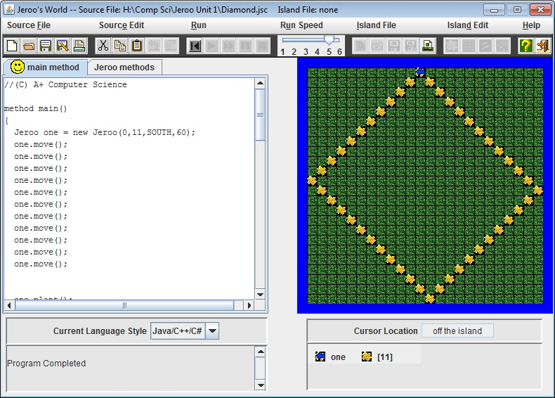
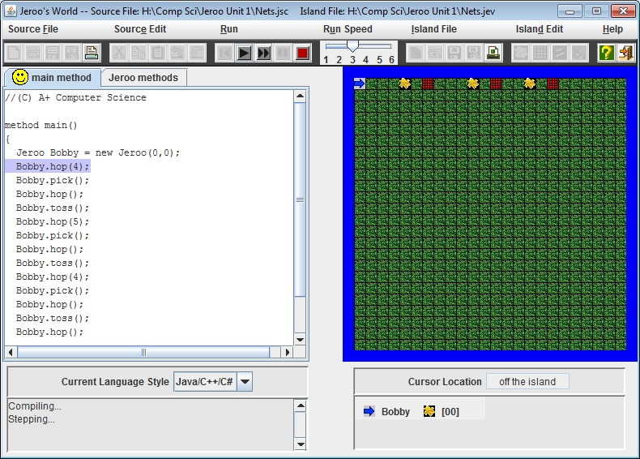
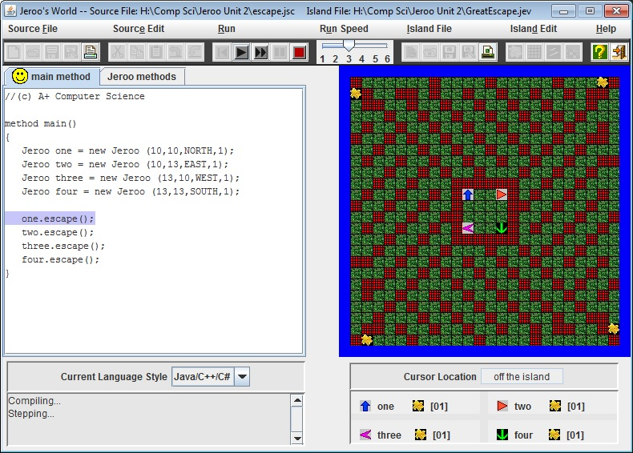
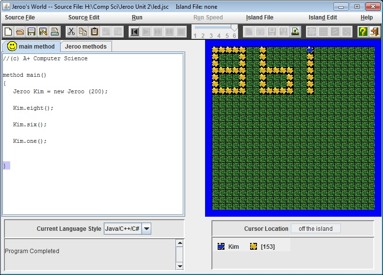
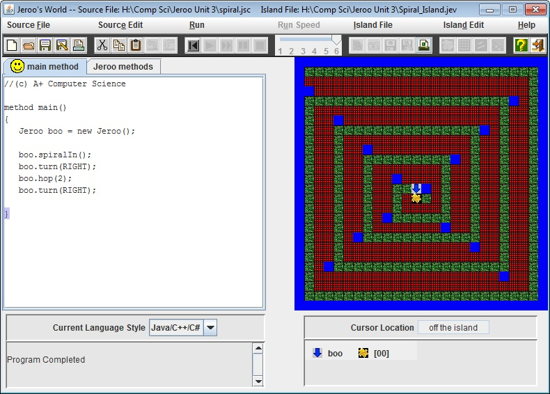
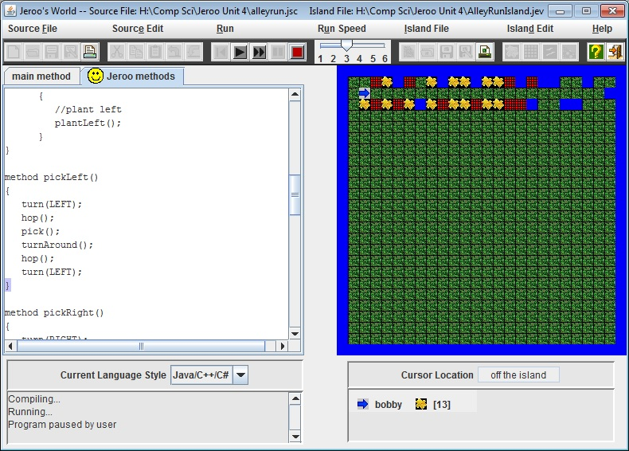
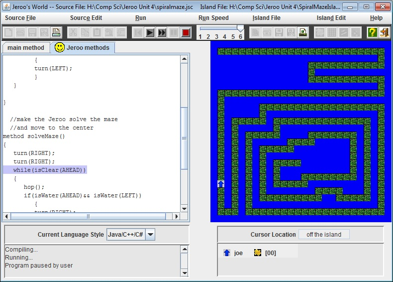

Jeroo Content
Unit One
 
Description
Unit One labs were an introduction into using Jeroo. We used basic commands and a lot of copy and pasting of those commands in order to complete the labs. These basic commmands include hop, plant, and toss.
Concepts Learned
- I learned to give the Jeroo a set amount of flowers
- I learned how to use basic commands such as hop, plant, and turn
- I learned to use the toss command and that when you toss a flower on a net, the net disappears
Unit Two
 
Description
In Unit Two, we leaned that methods are a way to create your own set of code that can be written in a word in the main method. They are especially useful because you can apply the same method to several different Jeroos. They also are useful in that there is less copy and pasting that needs to be done in the main method, and therefore cleans up the code.
Concepts Learned
- I learned how to use methods
- I learned how to apply a single method for several Jeroos
- I learned how to use several methods in one main method
- I learned how to reuse parts of a method to create new ones
Unit Three


Description
In Unit Three we learned to add loops into our code. Loops are beneficial in that they make coding a lot faster and easier. We also used conditions to help define those loops.
Concepts Learned
- I learned how to use while loops
- I learned how to use conditions
Unit Four
 
Description
In Unit Four we learned to properly use if statements to set conditions for the Jeroo. The purpose of if statements is to define an optional block of code. We also used if-else statements to define alternate blocks of code in which only one will be executed.
Concepts Learned
- I learned how to use if statements and how to loops those if statements
- I learned how to incorporate else statements into if statements